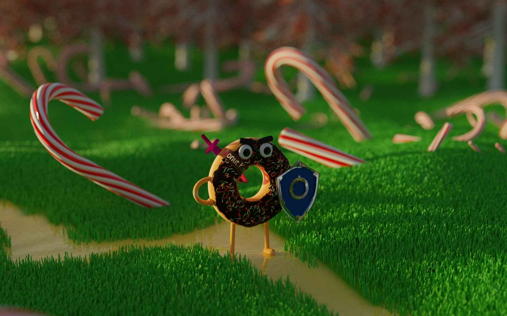

Benjamin Suzzoni
PhD Student in Theoretical Physics at the University of Southampton
\( \omega = d\alpha + d^\dagger\beta + \gamma \)
\(d\gamma = d^\dagger\gamma = 0\)
AdS/CFT - M-Theory - SUGRA
Under the supervision of Andy O'Bannon and together with Pietro Capuozzo, we are currently interested in computing the holographic entanglement entropy of CFTs with defects. In the context of String Theory and AdS/CFT, these are holographically described by brane configurations in which some branes end on others.
The curious among us might ask: "why do we care?". If one were to ask me this question I would probably roll my eyes in disbelief before suggesting the following:
- It's fun! I would never turn down an opportunity to learn fascinating things!
- The holographic entanglement entropy formula is to this date still unproven for the most general cases. However, its usefulness is undeniable as it allows us to relate CFT quantities on the boundary with geometrical ones in the bulk. If we have a good understanding of the bulk configuration, we are thus able to derive possibly new properties of the CFT. This can be more explicitly shown with the case of an M2-M5 brane configuration. Indeed, in this case the low energy effective field theory of the M5 being unknown, any CFT information we can derive from this configuration can help us build said effective field theory.
For those who wish for more details you can head to the My Research section of the website.
If all this is utter gibberish to you then please head to the family friendly section.
Latest papers on on the arXiv
2016 - 2020: MPhys University of Manchester: Physics with Astrophysics

2020 - 2021: MSc Imperial College London: QFFF

2021 - Time.now(): PhD University of Southampton: Theoretical Physics

\( S_{\text{EE}} = A(\gamma_{\text{RT}}) / (4G_N) \)
Spring School on Superstring Theory and Related Topics

Reconstructing the Gravitational Hologram with Quantum Information - Training Week

BUSSTEPP 2022

Gravity@Prague 2022
\(\int_{\mathcal{M}}d\omega = \int_{\partial\mathcal{M}}\omega\)
Astrophotography
Astrophotography consists in capturing images of stellar objects. The scope of possible targets ranges from the whole Milky Way, with landscape astrophotography, to the faintest and smallest objects in the night sky, with deep-sky astrophotography. My main interest relies in the latter. Whenever I find the time I set up my telescope to capture some of these faint celestial objects. Below you can see four pictures I took with a DSLR through my 1500mm focal length telescope.Programming
I also enjoy programming quite a bit. I am clearly far from being a good programmer but I have, nevertheless, experienced programming in many languages: C++, JS, Python, Wolfram Language.Here a few examples of projects I have coded:
- Deep Neural Network for Japanese character recognition using tensorflow
- Hand-gesture-based volume control through a webcam using openCV
- This website
Gymnastics
I've been practicing gymnastics for many years now. I'm not immensely good at it but I enjoy it, and that's all that matters.Blender
Blender is a free software for modeling, animating and rendering. One can use it to create photorealist art or fun 2D animations.Lately, I haven't been using Blender that much but here's my favorite render from a few years ago.
